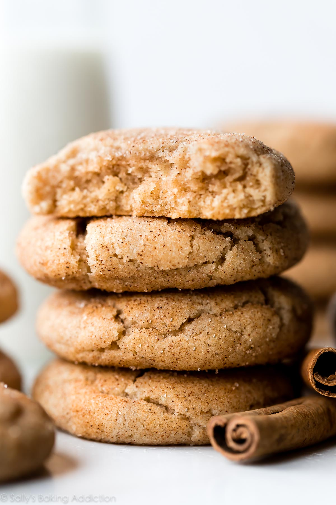

Wes' Cinnamon Cookies

Description
This recipe came about when I wanted chocolate chip cookies and
realized halfway through I had no chocolate chips!
It is basically a snickerdoodle cookie without the cream of
tartar tang.
Ingredients
- 2 cups all purpose flower
- 1/2 teaspoon baking soda
- 1/2 teaspoon of salt
- 3/4 cup of butter, melted
- 1 cup packed brown sugar
- 1/2 cup white sugar
- 1 tablespoon vanilla extract
- 1 egg
- 1 egg yolk
- 1 1/2 teaspoons ground cinnamon
Topping
- 1/3 cup white sugar
- 1 teaspoon ground cinnamon
Directions
- Preheat the oven to 325 degrees F (165 degrees C). Grease cookie sheets or line with parchment paper.
- Sift together the flour, baking soda and salt; set aside.
- In a medium bowl, cream together the melted butter, brown sugar and white sugar until well blended.
Beat in the vanilla, egg, and egg yolk until light and creamy. Mix in the sifted ingredients until just blended.
Stir in the chocolate chips by hand using a wooden spoon. Drop cookie dough 1/4 cup at a time onto the prepared
cookie sheets. Cookies should be about 3 inches apart.
- Bake for 15 to 17 minutes in the preheated oven, or until the edges are lightly toasted. Cool on
baking sheets for a few minutes before transferring to wire racks to cool completely.